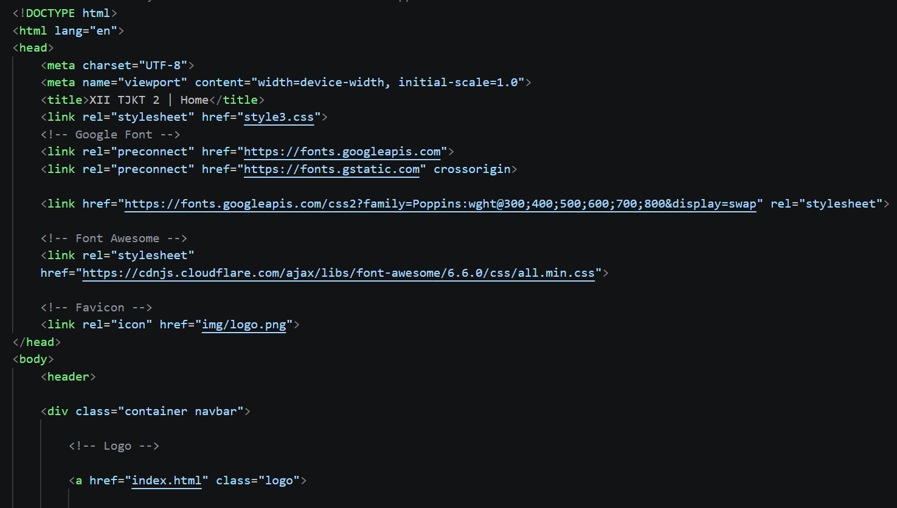
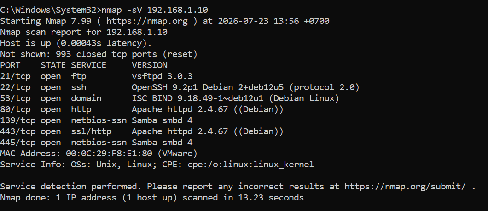
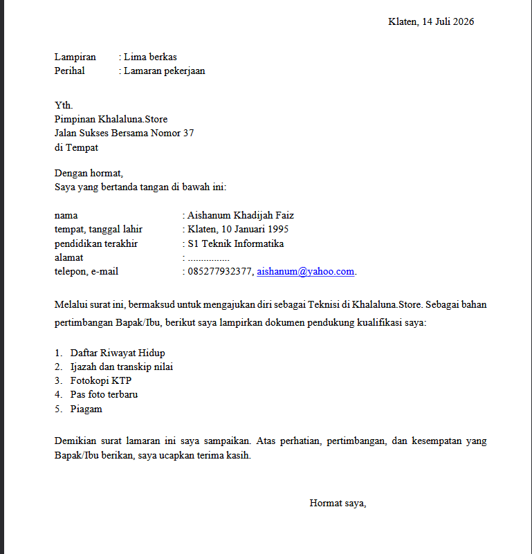
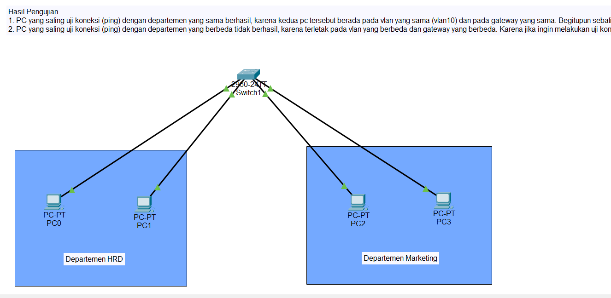
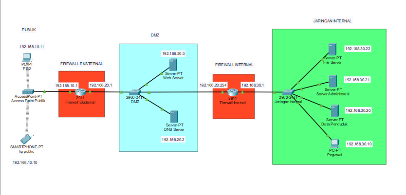

Halaman ini menampilkan berbagai project dan karya yang telah dibuat oleh siswa XII TJKT 2. Setiap karya menjadi bagian dari pengalaman dan kreativitas kami selama berada di sekolah. Berbagai karya tersebut menjadi hasil dari ide dan usaha yang kami kembangkan bersama.

Membuat website berdasarkan tema yang ditentukan oleh guru menggunakan bahasa pemrograman web.
Tahun : 2026

Melakukan praktik keamanan jaringan menggunakan berbagai perintah untuk mempelajari dasar-dasar keamanan jaringan.
Tahun : 2026

Membuat surat lamaran kerja dan Curriculum Vitae (CV) yang baik, rapi, dan sesuai dengan kaidah penulisan untuk persiapan memasuki dunia kerja.
Tahun : 2026

Melakukan konfigurasi Virtual LAN (VLAN) menggunakan aplikasi Cisco Packet Tracer sebagai simulasi jaringan komputer.
Tahun : 2026

Merancang dan mengonfigurasi topologi jaringan DMZ (Demilitarized Zone) menggunakan Cisco Packet Tracer. Topologi ini memisahkan jaringan publik, DMZ, dan jaringan internal dengan menggunakan firewall untuk meningkatkan keamanan jaringan.
Tahun : 2026
Setiap project yang dikerjakan merupakan bagian dari proses belajar siswa XII TJKT 2 dalam mengembangkan keterampilan di bidang jaringan, pemrograman, dan teknologi informasi sebagai bekal memasuki dunia kerja maupun pendidikan yang lebih tinggi.